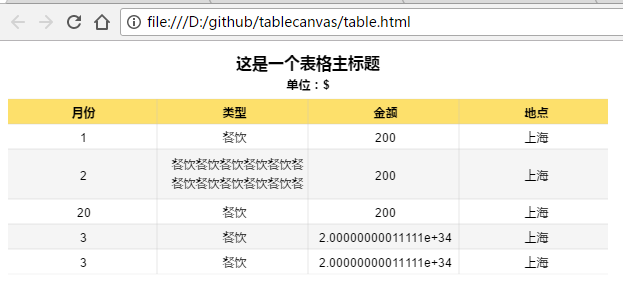
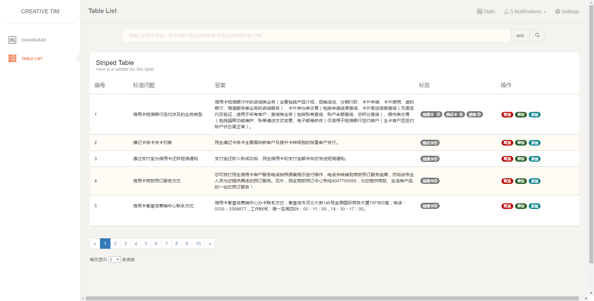
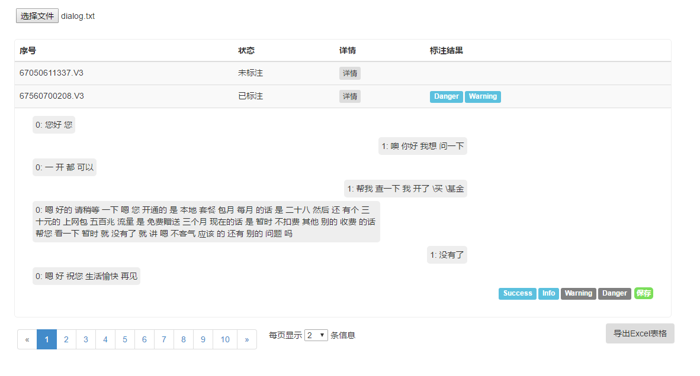
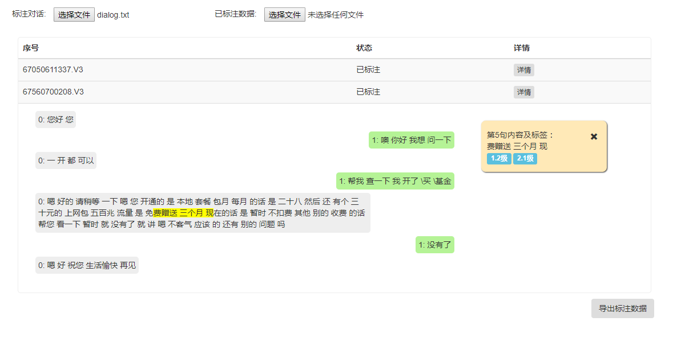

-
- Basic info. 基本信息
- 个人信息: 朱彦霖 / 女
- 毕业院校: 黑龙江大学
- 学历: 硕士
- 专业: 电子与通信工程
- GitHub: https://github.com/Yanlin-Zhu
-
- Skill. 技能清单
-
硕士阶段主修
html、html5、css、css3、JavaScript、JQuery、ajax、bootstrap、canvas、vuejs、webpack。读了JavaScript数据结构与算法、JavaScript高级程序设计（第3版）等书。
-
核心能力及特长
1、熟练运用HTML+CSS和W3C标准，熟悉HTML5、CSS3进行网页制作。
2、熟练运用Javascript、JQuery、PS。
3、实习期间用GitHub做过团队合作项目，分支开发。自己的GitHub上有一些项目代码。
4、熟悉常用的布局方式
5、熟悉bootStrap框架vuejs框架webpack打包ajax、Json技术。
6、了解基本的排序搜索算法。
-
- Experience. 项目与工作经验
竹间智能（2017.5.2 - 2017.8.27）
-
本人于2017年5月2日在竹间智能实习至2017年8月27日。
实习前自行练习过几个前端页面、和几个移动端页面
在实习期间运用的编程软件有：
Sublime text、phpStorm、Hbuilder
在实习期间做过的项目有：
1、用canvas画了一个内容自适应的表格，echarts绘制饼图。
Github：https://github.com/Yanlin-Zhu/tablecanvas.git
2、写过一个智能聊天机器人页面，实现了四列同步滚动，刷新自动读取聊天记录，换用户登录，修改保存机器检测结果等功能。
3、为一个debug平台修改过修改数据参数弹出框，并增加了一页可标签搜索、分页、的表格页，用Echarts为该平台的dashboard页增加饼图和柱状图。
4、完成一个本地（关闭浏览器自动保存，可导出表格）的语料标注工具。
Github：https://github.com/Yanlin-Zhu/Local_corpus_marking_tool.git
改革升级版
5、完成一个若干问题添加分类页面。
6、完成公司OA报销系统前端。
7、自行学习vuejs笔记练习vue.js项目：
Github：https://github.com/Yanlin-Zhu/vuejs.git
8、Lightbox插件开发
Github：https://github.com/Yanlin-Zhu/Lightbox.git
网页版个人简历链接（内含项目图片）：https://Yanlin-Zhu.github.io/resume/